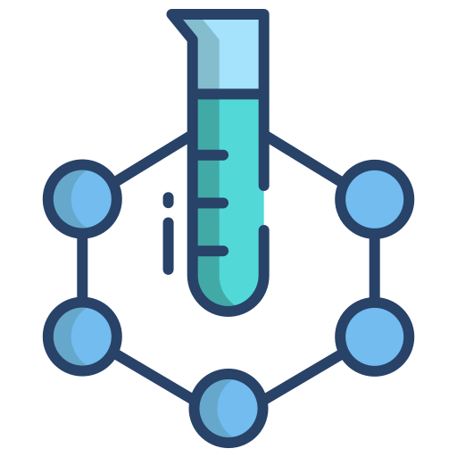
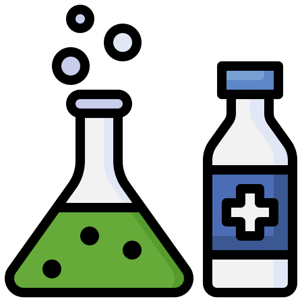

Еволюція лабораторного обладнання відображає загальний науково-технічний прогрес, спрямований на
підвищення точності, ефективності й безпеки досліджень. Розвиток обладнання пройшов кілька етапів:

Механічний етап (XVII–XIX століття): Основним інструментом досліджень були механічні прилади, такі
як мікроскопи, ваги, барометри. У 1609 році Галілео Галілей удосконалив мікроскоп, що стало першим
великим кроком до сучасної біологічної та хімічної науки.
Електричний етап (XIX–XX століття): З розвитком електрики з'явилися нові прилади: електронні
мікроскопи, спектроскопи, рентгенівські апарати. Завдяки цьому стало можливим вивчення структури
матеріалів на атомному рівні, що кардинально змінило хімію, фізику й біологію.
Автоматизація (середина XX століття): Впровадження комп'ютерів і автоматизованих систем управління
зробило можливим проведення високоточних експериментів без постійної участі людини. Перші
автоматичні піпетки, центрифуги та аналізатори дозволили значно підвищити продуктивність досліджень.

Цифровізація та роботизація (XXI століття): Сучасні лабораторії використовують високоточне цифрове
обладнання, роботизовані системи для аналізу зразків, трекінгові системи та програмне забезпечення
для управління великими обсягами даних. 3D-принтери дозволяють створювати моделі молекул та органів
для досліджень.